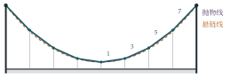

STEP I 1991，第 10 题
继续之前，请先阅读题目（原题为英文）。题目载于 STEP Support Programme 的题目资料库： step.maths.org/questions/91-s1-q10
引子
用手拿着一条链的两端，它便会垂成一条称为悬链线（catenary）的曲线（此名源自拉丁文的“链”字）。伽利略（Galileo）以为它是抛物线（parabola），其实不然，少年时代的惠更斯（Huygens）在 1646 年已证明了这一点。不过，若像悬索桥（suspension bridge）那样，用等距排列的吊杆把沉重的路面挂在链上，链确实会形成抛物线。分别在于重量如何分布：悬链线的重量沿弯曲的链身分布，而桥的重量则沿水平方向均匀分布。
本题只需在每个节点分解力（resolving forces），便能证明这条抛物线。关键在于张力（tension）的水平分量在整条链上处处相同，所以每一段的斜率都与它所承托的重量成正比。结果是一个优美的规律：相邻节点之间的落差按奇数 \(1, 3, 5, 7, \ldots\) 递增，而这些奇数的部分和（partial sums）正是完全平方数。
动笔之前
在每个节点 \(A_i\) 上有三个力作用：相邻两段链的张力，以及吊杆上所挂的重量 \(w\)。重量无法影响张力的哪一个分量？
重量是铅垂的，所以在每个节点上，两个张力的水平分量必须互相平衡。因此，张力的水平分量（设为 \(H\)）在链的每一段都相同。
逐步解题
阶段 1 每个节点上的方程
设线段 \(A_{i-1}A_i\) 与水平线所成的俯角为 \(\phi_i\)（由 \(A_{i-1}\) 向中间方向量度），则其张力 \(T_i\) 的水平分量为 \(T_i\cos\phi_i\)，铅垂分量为 \(T_i\sin\phi_i\)。对 \(1 \leq i \leq n\)，在 \(A_i\) 分解力： \[T_i\cos\phi_i = T_{i+1}\cos\phi_{i+1} = H, \qquad T_i\sin\phi_i - T_{i+1}\sin\phi_{i+1} = w.\] （外侧的一段向上向外拉，铅垂分量较大；内侧的一段向内并稍微向下拉；两者之差承托着吊杆。）
在中间的节点 \(A_{n+1}\) 会怎样？试利用桥的对称性。
由对称性，在 \(A_{n+1}\) 相接的两段互为镜像，所以各自承托该吊杆的一半重量：\(T_{n+1}\sin\phi_{n+1} = \frac12w\)。
阶段 2 由重量求斜率
由中间向外逐段计算，铅垂分量为 \[T_{n+1}\sin\phi_{n+1} = \tfrac12w, \quad T_n\sin\phi_n = \tfrac32w, \quad\ldots,\quad T_1\sin\phi_1 = \tfrac{2n+1}{2}w.\] 把各式除以 \(H\)，得斜率为 \(\tan\phi_i = \frac{(2(n + 1 - i) + 1)w}{2H}\)。线段 \(A_{i-1}A_i\) 的斜率同时等于 \(\frac{y_{i-1} - y_i}{h}\)，所以 \[\frac{y_n - y_{n+1}}{h} = \frac{w}{2H}, \qquad \frac{y_{n-1} - y_n}{h} = \frac{3w}{2H}, \qquad\ldots,\qquad \frac{y_0 - y_1}{h} = \frac{(2n + 1)w}{2H}.\] 取倒数后再乘以相应的奇数，可知 \(\frac{h}{y_n - y_{n+1}}\)、\(\frac{3h}{y_{n-1} - y_n}\)、…、\(\frac{(2n + 1)h}{y_0 - y_1}\) 各项均等于 \(\frac{2H}{w}\)。■
阶段 3 抛物线
设 \(j\) 为由中间向外数的节点序数，使得 \(A_{n+1-j}\) 与 \(A_{n+1}\) 的水平距离为 \(jh\)。它比 \(A_{n+1}\) 高出多少？
把各段落差相加，并设 \(c = \frac{wh}{2H}\)： \[y_{n+1-j} - y_{n+1} = c\bigl(1 + 3 + 5 + \cdots + (2j - 1)\bigr) = cj^2.\] 若 \(x\) 由中间量起，则 \(x = jh\)，所以该点高出最低节点 \(\frac{c}{h^2}x^2 = \frac{w}{2Hh}x^2\)。由对称性，另一边亦然，而两个支承点（\(j = n + 1\)）也符合同一公式。因此所有点都位于抛物线 \[y = y_{n+1} + \frac{w}{2Hh}(x - x_{n+1})^2. \qed\] 上。

回顾
找出不变的量。只有铅垂负载时，水平张力处处相同。
由中间开始累加。每一段都承托它与中间之间的全部重量，所以铅垂分量每次增加 \(w\)。
奇数之和是平方数。\(1 + 3 + \cdots + (2j - 1) = j^2\) 把一列斜率变成了一条抛物线。
背后的数学
抛物线还是悬链线？
把上述论证改为连续的版本，便能同时解释这两条曲线。对于一条水平张力恒为 \(H\) 的链 \(y(x)\)，张力的铅垂分量为 \(Hy'\)，而在一小段上，它的变化等于该段所承受的负载：\(H\,\mathrm{d}y' = \mathrm{d}W\)。
若负载沿水平方向均匀分布（沉重的路面，每单位路面长度的重量为 \(\rho\)），则 \(Hy'' = \rho\)，所以 \(y\) 是二次函数：一条抛物线。
若负载是链本身的重量，沿链身均匀分布（每单位链长的重量为 \(\rho\)），则 \(Hy'' = \rho\sqrt{1 + y'^2}\)，其解为悬链线 \(y = c\cosh\frac xc\)，其中 \(c = H/\rho\)。
在底部附近，链几乎是水平的，两者差不多一样；它们在支承点附近才有分别，因为那里的链较陡，同一段水平距离内包含较多的链。真实的悬索桥，桥面远比缆索重，所以形状十分接近抛物线。
倒转的链与拱
链处于纯张力状态；把它的形状上下倒转，便得到一个处于纯压力（compression）状态的拱，完全没有弯曲的倾向。胡克（Robert Hooke）在 1675 年以一个字谜（anagram）的形式发表了这个发现，解开后的意思是：“柔软的绳怎样悬垂，倒转过来，坚硬的拱便怎样屹立。”雷恩（Christopher Wren）与胡克把这个想法用于圣保罗大教堂（St Paul’s Cathedral）的圆顶，而高迪（Antoni Gaudí）设计巴塞隆拿的圣家堂（Sagrada Família）时，则从天花板垂下挂着重物的绳子，再把照片倒转来看。圣路易斯的拱门（Gateway Arch）就是一条（加权的）倒置悬链线。
1690 年，雅各布·伯努利（Jakob Bernoulli）向数学家提出挑战：求出悬垂的链的形状。不出一年，他的弟弟约翰（Johann）、莱布尼兹（Leibniz）和惠更斯都发表了解答。约翰·伯努利后来得意地忆述，出题的哥哥自己反而解不出来。悬链线是新兴的微积分（calculus）最早的胜利之一，并引出了双曲函数（hyperbolic functions）\(\cosh\) 和 \(\sinh\)；到了十八世纪，Vincenzo Riccati 和兰伯特（Johann Heinrich Lambert）对这些函数作了有系统的研究。
思维技巧
对于由节点和直杆件组成的结构，在每个节点上令各力平衡。不变的分量和逐步累积的负载，往往会揭示结构的形状。
到了大学，这会发展成工程学中桁架（trusses）和框架（frameworks）的分析，而在连续极限下，则成为缆索、梁和薄膜的微分方程（differential equations）。由离散的链过渡到连续的链，与 第 10.3 节 中由求和过渡到积分是同一步。
延伸练习
偶数条吊杆。把题目改为 \(2n\) 条吊杆再做一次，此时链的最低处是中间的一段水平线段。各节点是否仍然位于一条抛物线上？
张力。以 \(H\)、\(w\) 和 \(n\) 表示链中的最大张力。它出现在哪里？
悬链线。验证 \(y = c\cosh\frac xc\) 满足 \(y'' = \frac1c\sqrt{1 + y'^2}\)。证明悬链线由 \(x = 0\) 到 \(x = X\) 的长度为 \(c\sinh\frac Xc\)。
伽利略的错误。一条长度为 \(2L\) 的链悬挂在相距 \(2d\) 的两个支承点之间。当 \(L\) 只比 \(d\) 稍大时，证明悬链线的垂度（sag）与抛物线的垂度近似相同。为甚么伽利略的实验没有显示出两者的分别？
延伸阅读
E. H. Lockwood, A Book of Curves（Cambridge University Press）。悬链线、抛物线及其相关曲线。
Jacques Heyman, The Stone Skeleton（Cambridge University Press）。由胡克的链说起，讲述砖石拱和圆顶如何屹立不倒。
David Billington, The Tower and the Bridge（Princeton University Press）。桥梁的艺术与工程。